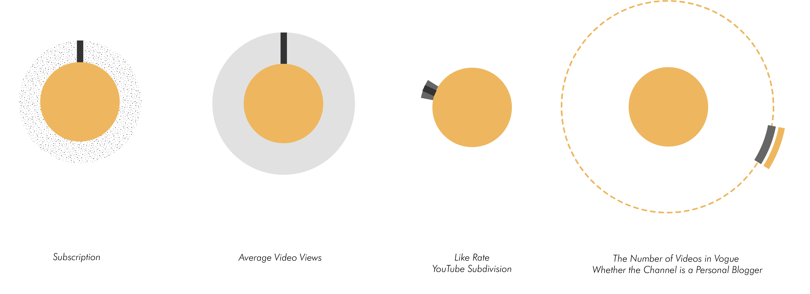

On February 2, 2021, Guinness World Records announced on its official Weibo account that short-video blogger Li Ziqi had set a new record in July 2020 for the "most subscribed YouTube channel in Chinese" with 14.1 million subscribers. In her videos, which are not subtitled in English, she uses simple conversations in Sichuan dialect to show the idyllic life in China. But foreign fans who can't read Chinese or understand the Chinese dialect have never been shy about expressing their love for Li Ziqi and her videos. On YouTube, a global video platform where English is the dominant language, what is the cultural spread of bloggers with East Asian cultural backgrounds like Li Ziqi?
This data story was entered in the IEEE PacificVis 2022 Visual Data Storytelling Contest for Hornorable Mention.
Shiman Zhang
Haotian Wu
Yuxuan Li
Yang Shi
Siming Chen
Nan Cao
After many attempts, we finally chose to use the form of circular visualization, and construct the portrait through the visualization of the following dimensions.

We selected the three YouTube divisions with the highest comprehensive subscriptions in each cultural area, and ranked the top ten YouTube bloggers from high to low according to the subscription data in the three divisions, a total of 30 people , drawing a portrait of the cultural dissemination power of each cultural area. And, we summarize the bloggers from TOP1 to TOP10 in a graph, and the order of ranking is clockwise.